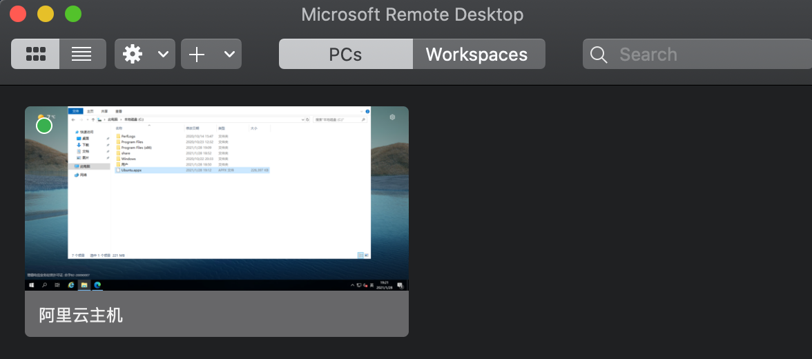
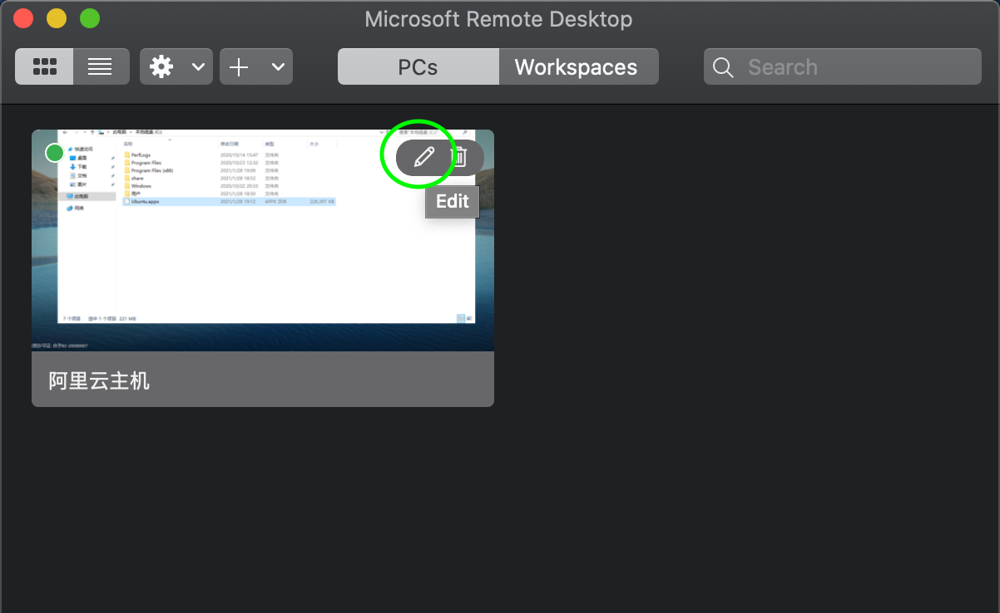
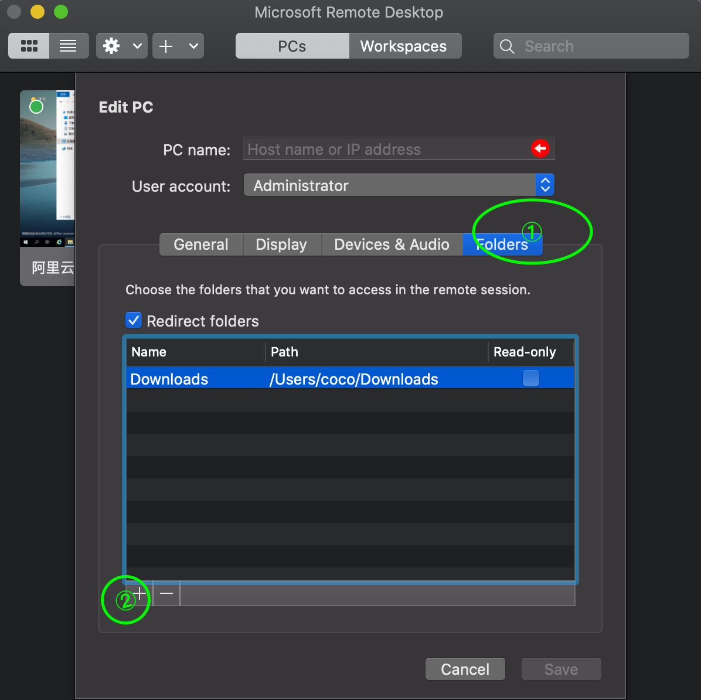
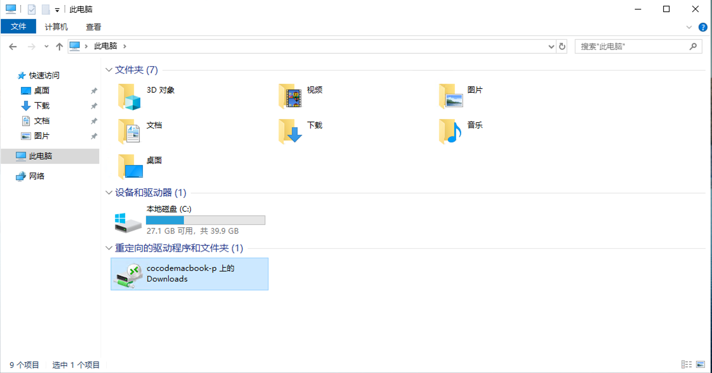
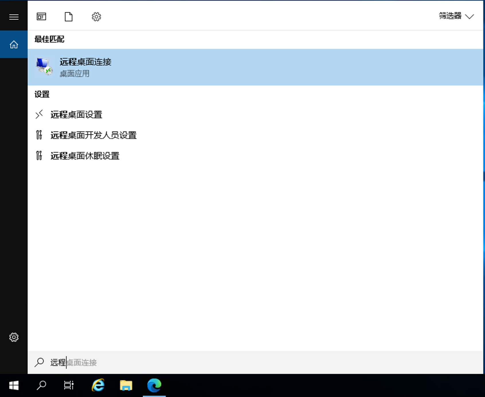
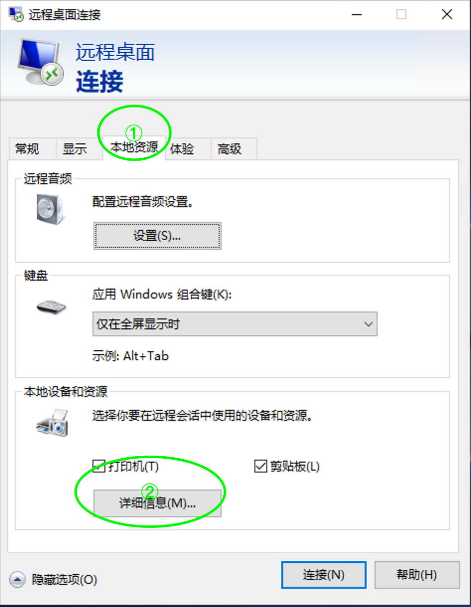
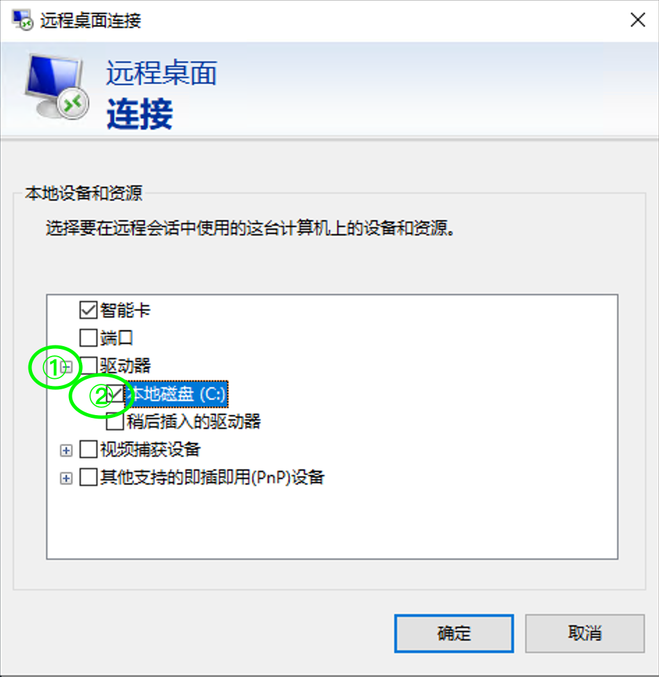

Winserver通过远程桌面传文件
title: Winserver通过远程桌面传文件
date: 2021-01-30 17:51:44
categories: 计算机
tags:
-
Server
-
Win
Mac Os
1.首先在Mac上安装Microsoft remote desktop
如果有美区账号可以直接在Appstore安装，如果没有可以使用我上传的版本
2.连接到你的winserver，连接后如下图

3.选中winserver主机，点击edit进入编辑界面

4.按照步骤点击相关位置，添加文件夹

5.最后就可以在你的winserver上看到MacBook上面共享的文件夹了

Windows
1.win+s打开搜索，输入‘远程桌面’，打开远程桌面连接

2.点击本地资源，后点击详细信息

3.选择需要共享到服务器的盘符

⚠️：在Winserver上建议使用ctrl+c复制后粘贴到Winserver后再打开，否则有可能会卡死（尤其是小带宽的服务器）
🔗参考：